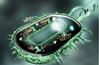

Биокомпьютер будущего — на принципах волновой генетики
Волновой геном - энергоинформационное полевое образование, сопровождающее вещественный геном и несущее в себе большой объём информации, превышающий объём информации, закодированный в самих генах. Геном является источником и приёмником информации, его можно использовать и в компьютере
Создание биомолекулярно-радиоэлектронных компьютерных систем приведет к тому, что биокомпьютеры будут обладать памятью, сравнимой с генетической. Ещё эти компьютеры пусть и более медленее, но в некоторых ситуациях могут опередить обычных собратьев.
- 